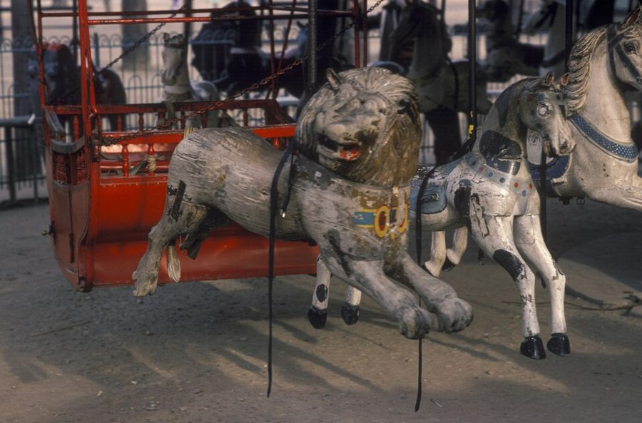
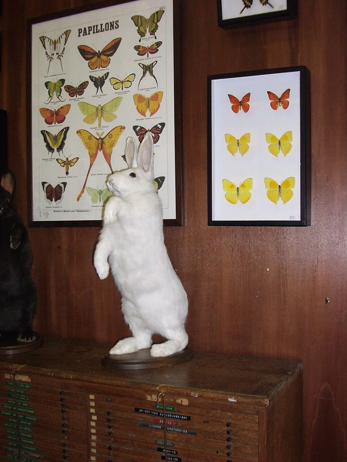
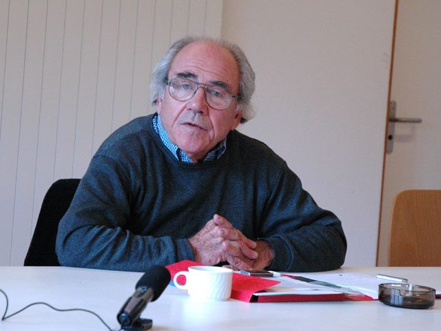
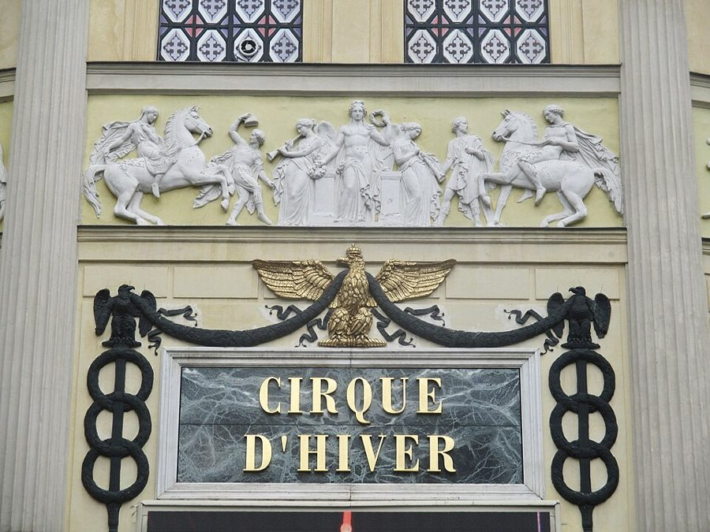
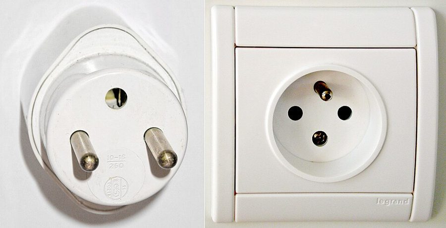

这一篇在做什么
1995 年秋天到圣诞，作者一家搬到巴黎的头几个月。这一篇不是专栏，是作者给自己写的圣诞日记，十三段，一段一个小话题：CNN 的欧洲天气预报、卢森堡公园的旋转木马、卖动物标本的老店、一场哲学研讨会、马戏团、保姆、跳蚤市场、一枚勋章、内衣广告、百货公司、圣诞灯、插头。读的时候抓两条线：一条是到处都一样的电视和信息，一条是只在一个地方才有的东西。再留意一个怪词 Regulon，它在三节里出现。

卢森堡公园的旋转木马，1980 年。木头狮子和马身上的漆已经剥落，左边是一个红色的座厢。§2 作者和一岁多的儿子就坐在「小马车」里转。Maeder, Herbert, 1930–2017，CC BY-SA 4.0，维基共享资源 读之前：这篇的来历
这一篇是作者的私人日记，不是《纽约客》的专栏。第 1 篇导言里作者说，书里收了他每年圣诞写的日记，这些日记比随笔更沉思、甚至更悲观，因为是写给自己的笔记，不是寄出去的信。日记写在 1995 年底：§2 说有线电视的人是大罢工第一天早上来装的（第 3 篇末尾也提到这个装机工），§13 说圣诞前五天 BHV 百货因为罢工几乎没人。一家人秋天刚到，儿子 Luke 一岁多，刚请了保姆，还在买家具、买电器。它是第一部分的最后一篇，第一部分和它同名，都叫「冬季马戏团」；下一篇进入第二部分，从法国给新体育场起名讲起。
全世界都在看同一套电视的时候，还有什么东西挡得住它、只属于一个地方？
读的时候带着这几个问题。不用先找答案，读完回来对照「检查一下理解」。
作者为什么说 CNN 的天气预报「最吓人」？§1
旋转木马上套环没有奖品，作者从里面看出了什么？§2
「符号圈里没有 Regulon」是什么意思？读到最后，作者同意这句话吗？§4 §13
作者拿法国和美国比了很多回：勋章、内衣广告、电器、电话。他是在夸法国、笑话美国，还是两边都笑？§8 §9 §13
这一篇的路线
日记没有起承转合，十三段各说各的，读译本时常会觉得「怎么又换题目了」。要看的是几条线怎么在段落之间穿来穿去：带孩子出门、电视和信息、买东西安家、拿法国比美国。把这几条线串起来的是一个怪词 Regulon：§4 研讨会上冒出来，§5 顺手用了一次，§13 用了两次，意思一次次翻转。前几节多在公园、标本店、马戏团，最后四节几乎都在百货公司里。下面这张图把这几条线摊开。
§1
§2
§3
§4
§5
§6
§7
§8
§9
§10
§11
§12
§13
孩子
电视与信息
买东西安家
法国对美国
第一次坐下
第二次坐下
第三次坐下
本站示意图。每一行是一条线，圆点表示这条线在这一节出现；外面套圆圈的三处是 Regulon 这个词出现的节。竖线是本站分的三次坐下。 作者落在哪： 作者没有给全球化下定论，而是在一个问题上来回摆：有没有什么挡得住到处流的电视信息？§4 他借鲍德里亚说没有；§13 他说有，就是插头，生活必需的东西各国反而更不一样；最后一句又退回去：百货公司的圣诞歌原来是美国娱乐节目的片头曲，「也许终究没有」。他停在这个「也许」上。
分节地图
原书这一篇是日记，有十二处分隔，分成十三节，每节一个小话题。篇幅长，本站把它分成三次坐下读。每一节的粗体是读译本时认得出的场面；下面的斜体是英文这一节开头的几个词，打开电子书搜它就能跳到那里。读完一节打个勾。
第一次坐下§1–§4 · 约 2700 词 · 天气预报、旋转木马、标本店，一路走到 Regulon 这个词
CNN 的欧洲天气预报约 400 词 It is the weather reports on … 开篇定调：同一种欢快腔调，报遍欧洲的伤心地。 装有线电视的人；卢森堡公园的旋转木马约 800 词 When the cable television man came … 从满天的「电雨」转到一座只在这里的木马。留意套环为什么没有奖品。 音乐木马；巴克街的 Deyrolle 标本店约 900 词 On nice days, when we don’t … 一家老店的奇景。结尾括号里政府和大象的玩笑别跳过。 鲍德里亚的研讨会，鳕鱼和 Regulon约 600 词 Luke is as frightened (and fascinated) … 全篇的关键词在这里出现。作者先笑这场研讨会，再借它说电视。 第二次坐下§5–§11 · 约 2500 词 · 马戏团、保姆、跳蚤市场、勋章和内衣广告，最后走进 BHV
冬季马戏团，抢到荧光手环约 400 词 When I lived here with my … 少年时的记忆对眼前的演出；结尾作者自称「帝国的」美国人。 斯里兰卡保姆，对面楼抖桌布的手约 400 词 We have found Luke a baby-sitter, … 安家靠的是几百件小事，比如去哪买咖啡。 跳蚤市场、吉卜赛爵士，出租车司机约 500 词 We have been trying to furnish … 地铁站名、「文明的阁楼」、一个完美的半小时。 莎朗·斯通来领法国勋章约 300 词 It is odd to think that … 巴黎不再以情色出名；法国人在意的是由谁来评判。 Aubade 内衣广告，晚宴上的紧身裙约 400 词 The one exception to the erotic … 拿纽约和巴黎的欲望「暗号」作对比。 BHV 百货门口那张接吻照片约 200 词 Mostly, we shop at BHV, the … 拿一张名照片开玩笑。 新泽西的折扣店，烤面包机退货约 300 词 BHV, in its current form, seems … 租房要自己买电器；在这里顾客永远是错的。 第三次坐下§12–§13 · 约 2400 词 · 圣诞灯三进 Bon Marché，插头、鱼、电器，最后回到 BHV 的圣诞歌
三次去 Bon Marché 换圣诞灯约 800 词 The week before Christmas I had … 一出买灯的喜剧。留意作者怎么「读不懂」盒子上的字。 插头、鱼、冰箱和电话，BHV 的圣诞歌约 1600 词 For all the talk about globalization, … 全篇最长的一节，Regulon 又出现两次，意思翻了两回。
背景：作者默认你知道的事
按在书里出现的顺序排，标题前是节号。
§1 天气预报里的旧欧洲CNN 是 1980 年在亚特兰大开播的美国有线新闻台，九十年代已经通过卫星播到欧洲。美国地方电视台报天气，习惯按「三州地区」（tristate area）这样的片区来报，作者小时候在费城听的就是这种。§1 他把这种腔调放到欧洲地图上：华沙、维也纳、布拉格，都是二十世纪惨剧的发生地。「西班牙边境」那一句说的是本雅明（Walter Benjamin）：这位德国犹太裔批评家 1940 年 9 月逃到法西边境的波尔特沃（Portbou），得知可能被遣返法国，在那里自尽。
§2 卢森堡公园的旋转木马卢森堡公园（Jardin du Luxembourg）在第六区，离作者家不远。园里的旋转木马 1879 年开始转，常被说是巴黎最老的一座，一般说是照歌剧院建筑师加尼耶（Charles Garnier）的图纸做的。外圈的大孩子拿着木棍，转的时候去穿挂下来的小铁环，这叫「套环游戏」（jeu de bagues）。美国老式旋转木马上也有类似的环，抓到黄铜环可以免费再坐一次，所以英语里 grab the brass ring 是「抓住大好机会」。
齐奥朗 Emil Cioran 罗马尼亚出生、用法语写作的哲学家，以悲观的格言出名，长年住在卢森堡公园附近，1995 年 6 月去世。§2 括号里作者想，他散步时有没有看过这个游戏。
§3 Deyrolle 标本店Deyrolle 在第七区巴克街（rue du Bac）46 号，1831 年创办，卖动物标本、昆虫和贝壳，也印给学校挂的自然课挂图。店开在一座老的私人宅邸（hôtel particulier）里，陈列室在楼上。作者说它是巴黎「了不起的超现实主义景点」之一。§3 提到的《天堂的孩子》（Les Enfants du Paradis）是卡尔内（Marcel Carné）1945 年的电影，片名里的「天堂」指剧院顶层最便宜的座位：作者说楼上回廊里的羊和山羊像那里的群众演员，俯看楼下的「明星」狮子。

Deyrolle 店内一角，2005 年：蝴蝶挂图、蝴蝶标本框，抽屉柜上立着一只白兔标本。照片摄于 2008 年那场大火之前（见「后来」）。bixentro（Flickr），CC BY 2.0，维基共享资源 §4 鲍德里亚和他的研讨会鲍德里亚（Jean Baudrillard，1929–2007），法国社会学家、哲学家，1981 年出版《拟像与仿真》（Simulacres et Simulation），说媒体的影像已经取代了现实。1991 年海湾战争时他发表文章，题目就叫《海湾战争没有发生》，意思是观众看到的只是一场电视制作。八十年代纽约 SoHo 的艺术圈很迷他。研讨会在蓬皮杜中心（Centre Pompidou），巴黎人按所在街区叫它 Beaubourg。书里说他「五十来岁」，其实他 1995 年已经 66 岁。

鲍德里亚 2004 年在瑞士萨斯费的欧洲研究生院讲课，比这一篇晚九年。en:User:Europeangraduateschool，CC BY-SA 2.5，维基共享资源
罗兰·巴特 Roland Barthes 法国文学批评家、符号学家（1915–1980）。作者原以为鲍德里亚也像巴特那样高瘦。第 1 篇说作者十几岁时被带去听过巴特的研讨会，一个字没听懂。
§5 冬季马戏团和消失的夏季马戏团冬季马戏团（Cirque d'Hiver）在第十一区，建筑师伊托夫（Jacques Ignace Hittorff）设计，1852 年开幕时叫「拿破仑马戏场」，冬天演出。和它配对的是同一位建筑师 1841 年在香榭丽舍大道上盖的夏季马戏场（Cirque d'Été），夏天演出，后来拆了。所以作者猜「从前也有过夏天的马戏团」，猜对了。书里说它是八角形，其实是二十边形。太阳马戏团（Cirque du Soleil）总部在蒙特利尔，作者少年时住在那里（第 1 篇），所以说「从家乡来的」。

冬季马戏团正门上方，2015 年。金字招牌上方是一只金鹰，再往上是一段白色浮雕，刻着马和穿古典长袍的人物；§5 说这样的浮雕绕着屋顶一圈。Thomon，CC BY-SA 4.0，维基共享资源 §6 哲学家列维和他的妻子§6 说保姆的丈夫给哲学家列维开车，§9 作者在一场晚宴上见到列维和他的妻子。两人都是九十年代巴黎媒体上常见的面孔，美国读者也认得。
贝尔纳-亨利·列维 Bernard-Henri Lévy 1948 年生，七十年代「新哲学家」的代表人物，常上电视，以敞着领口的白衬衫出名。
阿丽尔·董巴尔 Arielle Dombasle 演员、歌手，1993 年和列维结婚，演过侯麦（Éric Rohmer）的电影，如 1983 年的《沙滩上的宝莲》。§9 说的那种「哲学、情色、话多」的法国电影，就是这一路。
§7 跳蚤市场和 4 号线巴黎的跳蚤市场（Marché aux Puces）在城北边界外的圣旺（Saint-Ouen），坐地铁 4 号线到终点克里尼昂古尔门（Porte de Clignancourt）。这条线从作者回家下车的奥德翁（Odéon）站一路往北，书里念的红堡（Château Rouge）、水塔（Château d'Eau）、北站都在线上；奥德翁地铁口立着大革命人物丹东的铜像。市场由许多小市场组成，Vernaison 是最老的一个。市场里的酒吧常有吉卜赛爵士乐队，这种风格来自三十年代在巴黎成名的吉他手莱恩哈特（Django Reinhardt）。
§8 莎朗·斯通和艺术与文学勋章艺术与文学勋章（Ordre des Arts et des Lettres）是法国文化部 1957 年设立的勋章，骑士（Chevalier）是最低一级，也授给不少外国艺人。莎朗·斯通（Sharon Stone）因 1992 年的《本能》成名。授勋的文化部长杜斯特-布拉齐（Philippe Douste-Blazy）1995 到 1997 年在任。作者在 §9 结尾又拿这枚勋章开了一次玩笑。
§10 BHV 和杜瓦诺的吻BHV 全名「市政厅百货」（Bazar de l'Hôtel de Ville），在右岸的里沃利街（rue de Rivoli），正对巴黎市政厅，1856 年开张，以五金、家电、装修材料出名。书里说它是老佛爷百货（Galeries Lafayette）的「孩子」，按年代说反了：老佛爷 1893 年才开张；不过 1991 年起 BHV 归老佛爷集团所有。杜瓦诺（Robert Doisneau）1950 年拍的《市政厅前的吻》后来成了巴黎的象征；1993 年的官司里才公开，那对恋人是他请来摆拍的。
BHV 在里沃利街和档案街转角的大楼，2015 年。楼上刻着「家具」「家用」，底层招牌已改叫 BHV Marais，窗边挂着打折（soldes）的条幅。GFreihalter，CC BY-SA 3.0，维基共享资源 §13 电压、插头和气动邮件法国民用电压当时是 220 伏（后来标准改为 230 伏），美国是 110 伏（现在标称 120 伏），所以美国电器到法国要用变压器。法国插头是两根圆插脚，接地针长在插座上，插头上留一个孔（见图）。美国其实也早有带接地的三脚插头，「只有美国没接地」是作者为了接「社会安全网」那个比方开的玩笑。§13 说的 pneus 是巴黎的气动邮件：信装进管子，靠气压在地下管道里送，1866 年到 1984 年运行。

法国的插头（左）和插座（右）。插座上伸出来的那根是接地针，插头上方的小孔对着它。Looxix、Etienne Rastoul，CC BY-SA 3.0，维基共享资源 词与短语
只收中文译文多半传不出原味的地方：熟词生义、反话和挖苦、典故、夹在英文里的法文。读译本读到觉得别扭、不知道作者在说什么时，来这里找那一节的；斜体小字是原句里的几个英文词，在电子书里搜它就能找到原文。
§1 CNN 的欧洲天气预报
low on the totem pole
… pretty low on the CNN totem pole …
地位很低
图腾柱上的形象从上到下排，美国口语用 low on the totem pole 说「排在底层」。欧洲天气这个差事在 CNN 不受重视，所以主播老换人。
corn-fed
… a corn-fed, nicely Jane Pauleyish woman …
（美国中西部式的）健壮朴实
字面是「玉米喂大的」，原说牲口，用在人身上指中西部乡下那种结实、单纯的样子。Jane Pauley 是 NBC 晨间新闻的女主播，作者拿她当这一类长相的标本。
the shore
… of you heading for the shore …
（新泽西的）海滨
费城人说 the shore 专指新泽西的海滨度假地，如大西洋城。作者在学他童年听惯的地方台腔调。
the imperial parade
… a sweater for the imperial parade …
帝国的凯旋游行
反话。作者说美国赢下了史上最大的胜利，强过任何帝国，能做的却只是笑着提醒你「游行时带件毛衣」。吓人的不是天气，是这种什么都抹平的轻松。
§2 装有线电视的人；卢森堡公园的旋转木马
like a priest reciting the catechism
… like a priest reciting the catechism …
像神父念教理问答
catechism 是一问一答背诵的天主教教义。装机工一个频道一个频道地介绍 CNN、MTV、欧洲体育台，作者故意用宗教的大词来形容：这是全球信息时代的「传教」。
po-faced
… the po-faced woman goes to tie …
板着脸的
英式口语，指一本正经、毫无表情。卖气球的女人不苟言笑，正好吓着了孩子。
approach and avoidance
Approach and avoidance with older women.
又想靠近又想躲开
心理学术语「趋避冲突」。一岁多的孩子见了气球又要又怕，作者用这个词，说得像在分析一个成年男人和年长女人的感情，是玩笑。
the Big Brass Ring
… going for the Big Brass Ring …
（去抓）大黄铜环
美国老式旋转木马上抓到黄铜环可以免费再坐一次，英语因此用 grab the brass ring 说「抓住成功的机会」（见「背景」）。作者说他一辈子都在书里读到这个比喻；巴黎的环却是锡的，套中了也没有奖品。
spinning is its own reward
After all, spinning is its own reward.
转圈本身就是奖赏
套的是谚语 virtue is its own reward（美德本身就是回报）。前一句括号里作者把套环看成「写作生涯」：难、专心、没有理由。
§3 音乐木马；巴克街的 Deyrolle 标本店
come-hither
… kind of come-hither wraparound window entrance …
招徕客人的
come hither 是古英语「过来」，作形容词多指勾人的眼神。这里说老式店面：门缩在里面，两边是橱窗，把人一步步引进去。
hôtels particuliers
… one of the old hôtels particuliers …
（法文）私人宅邸
hôtel 在这里不是旅馆，是贵族或富人在城里的独栋大宅。巴黎左岸第七区这种老宅很多。
reanimated
… reanimated is the correct term …
复活（标本行的说法）
作者故意更正自己：不该说「做成标本」，该说「复活」。用店家体面的说法，同时笑这种说法。紧接着说这些法国狮子做得一脸无聊，反倒更吓人。
Les Enfants du Paradis
… the extras in Les Enfants du Paradis …
（法文）《天堂的孩子》
1945 年的法国电影。paradis 是剧院顶层最便宜的座位，叫「天堂」。楼上回廊的羊和山羊俯看楼下的狮子，像坐在「天堂座」里的群众演员（见「背景」）。
courtesans of affection
… mere courtesans of affection, feigning a feeling …
卖弄感情的交际花
作者挖苦宠物：它们的爱也许只是为了吃的装出来的，所以被主人「换掉」也不冤，像交际花一样。
Elephants will be nudged.
… be falling. Elephants will be nudged …
大象会被人「推一把」
轻描淡写。老板娘抱怨法律不许把动物园里倒下的大象做成标本；作者在括号里替政府把担心说出来：一旦倒下的大象值钱，大象就不会只是自己倒下了。nudged 的意思是被人弄死。
§4 鲍德里亚的研讨会，鳕鱼和 Regulon
the terror of West Broadway
… the terror of West Broadway back in …
纽约艺术圈又怕又迷的人物
West Broadway 是纽约 SoHo 画廊集中的街。terror 不是「恐怖」，是让一个圈子人人谈论、人人发怵的人，近似 enfant terrible。
the Regulon
… which I will call the Regulon …
「调控子」
经济学家当场给「限制繁殖的原理」起的名字，还郑重写上黑板。作者在下一段说达尔文早就解决了这个问题：调控子就叫生命，或者死亡。
Semiosphere
… There is no Regulon in the Semiosphere …
符号圈
「符号圈」是苏联符号学家洛特曼（Yuri Lotman）1984 年提出的说法，指符号和意义构成的整个环境。鲍德里亚用它指媒体影像的世界。作者在 §4 末尾把这句话翻成大白话：电视和电影没有天敌。
single things in one fixed place
… are single things in one fixed place …
一个个固定在一处的东西
全篇对照的一边：旋转木马、音乐木马、标本店都只在一个地方；电子游戏和电视无处不在。见「值得停下来的句子」。
§5 冬季马戏团，抢到荧光手环
Regulon got it
Regulon got it, I guess.
大概是被 Regulon 收拾掉了
got it 在这里是「把它干掉了」。夏季马戏团没了，作者半开玩笑地拿上一节的词来解释，意思倒了过来：这回 Regulon 吃掉的是老东西。
poussette
… as I push his poussette …
（法文）婴儿推车
全书反复出现的法文词。作者不用英文的 stroller，是在提醒：这是巴黎的日常。
to a man
The French fathers, soccer players to a man …
个个都是
to a man 是「无一例外」，不是「对一个男人」。法国父亲都踢足球，不会用手接东西。
like a pop-up
… pulled one in like a pop-up …
像接棒球的高飞球
pop-up 是棒球里打得又高又近的飞球，最好接。作者在中央公园打了多年蹩脚的垒球，这回派上了用场，右拳往左手套里一砸，稳稳接住。
so imperial, so American
… so proud, so imperial, so American …
那么帝国，那么美国
回到 §1 的「帝国」。抢到手环的得意和惹人厌，作者说正是美国人在世界上的样子，他是在自嘲。
§6 斯里兰卡保姆，对面楼抖桌布的手
the American liberal abroad
… theme tune of the American liberal abroad …
旅居海外的美国自由派
liberal 在美国指政治上偏左、讲宽容的人。保姆唱的「驴子轻轻唱，你不跟它走，它就走了」，作者说它像这种人的主题曲，是拿自己这一类人开玩笑。
Oh, Shaky Lady, be good to me
Oh, Shaky Lady, be good to me …
哦，抖布女士，待我好一点
听起来是在套格什温 1924 年的歌 Oh, Lady Be Good!。对面楼每天八点一刻伸出一只手抖桌布，一家人给她起名、编歌，还称她为曙光女神。
comes at you in little bursts
… comes at you in little bursts …
一阵一阵地扑过来
主语是 The Semiosphere。作者把鲍德里亚的大词借来说小事：去哪理发、买哪种咖啡，这些问题一阵阵冲你来。
§7 跳蚤市场、吉卜赛爵士，出租车司机
the only fleas in it
… the only fleas in it all have …
市场里唯一的「跳蚤」
双关。flea market 是跳蚤市场，作者说里面的「跳蚤」都拿白金运通卡：东西一点也不便宜。
Gabinish
… lovely, thirties, Gabinish overtones …
让人想起让·迦本的
让·迦本（Jean Gabin）是法国三十年代电影的硬汉明星，那时的片子多拍火车站、码头、小酒馆。北站这个站名让作者想起那种黑白片的气氛。
café-calva
… a café-calva and a grenadine for Luke …
（法文）咖啡配苹果白兰地
calva 是诺曼底的苹果白兰地 calvados 的简称。grenadine 是石榴糖浆兑水，法国小孩常喝。作者说点单时有种「脱口而出」的快感：他觉得自己像个巴黎人了。
the family educates
… but the family educates …
家庭教人做人
出租车司机这句话，在法语里靠 instruire（教知识）和 éduquer（教规矩、教做人）两个动词的区别。英文 instructs / educates 字面上差别不大，中文要译成「学校教书，家庭育人」才出得来。
§8 莎朗·斯通来领法国勋章
running a bimbo deficit
… it is running a bimbo deficit …
美艳尤物「入不敷出」
bimbo 是美艳而没头脑的女人；run a deficit 是经济新闻里的「出现赤字」。作者说巴黎情色不足，只好进口，大词小用。
chauvinists about their judgment
They remain chauvinists about their judgment …
对自己的眼光盲目自负
chauvinist（沙文主义者）这个词源自法国人的名字 Chauvin。作者说法国人对自己的文化未必自负，对自己的「评判」却自负：美国东西好不好，要由他们来说。
fondling its chest
… while simultaneously fondling its chest …
一边又在摸它的胸
接前半句「从鼻子底下瞧不起美国文化帝国主义」。给莎朗·斯通别勋章，正好别在胸前：一边鄙视，一边揩油。这个下流的双关是这一节的收尾。
§9 Aubade 内衣广告，晚宴上的紧身裙
very Hurrell
… black and white, very Hurrell …
很有赫里尔的味道
George Hurrell 是三四十年代好莱坞明星肖像摄影师，黑白、强光打出的轮廓。作者拿人名当形容词，美国读者一看就懂。
coquettish
They are coquettish, a word I had …
卖弄风情的
来自法文 coquette。作者说这个词他以前只认得，从没和一种具体感受连在一起，是在巴黎的广告上才「懂」的。
reverse-spin coding
… complicated, reverse-spin coding of New York life …
反着读的暗号
reverse spin 是打球时让球倒旋。作者说纽约女人的穿着要反着解读：紧身裙不是邀请，是独立宣言。巴黎没有这一套。
Désir
… Désir in Paris is surreptitious …
（法文）欲望
用法文，是说这是巴黎特有的那一种：偷偷摸摸，但不带反讽。
You could tell by the medal
You could tell by the medal …
看那枚勋章就知道
回扣 §8。在纽约，素面朝天读法文报的女孩可能就是莎朗·斯通：认得出来的办法，大概只有她胸前的法国勋章。
§10 BHV 百货门口那张接吻照片
the BMT near Macy’s
… the entrance to the BMT near Macy’s …
梅西百货旁的地铁口
BMT 是纽约地铁的一个系统，梅西百货在曼哈顿三十四街，那一带的地铁口永远挤满人。作者说在 BHV 门口接吻，就像在那里接吻。
§11 新泽西的折扣店，烤面包机退货
silent as a Greek oracle
… a Miele, silent as a Greek oracle …
安静得像希腊神谕
神谕向来话少又含糊，作者用它夸洗碗机安静。顺带一提，Miele 是德国牌子，书里说成了法国的。
the customer is always, entirely wrong
… here the customer is always, entirely wrong …
顾客永远、完全是错的
倒用 the customer is always right（顾客永远是对的）。下面退烤面包机的场面就是例子：店员怪他们拿葡萄干面包去烤，最后还是给换了。
§12 三次去 Bon Marché 换圣诞灯
wrote whole novels on this theme
… wrote whole novels on this theme …
就这个题目写过好几本小说
亨利·詹姆斯（Henry James）的小说常写美国人到了欧洲水土不服，作者把这个「国际题材」缩小成「有的美国灯在巴黎亮，有的不亮」。玩笑。
guirlandes
… come in guirlandes—garlands—closed circles …
（法文）花环
法国的圣诞灯做成首尾相接的一圈，不是一条。这一节的笑料都从这个词来。
my Roy Rogers bit
… did my Roy Rogers bit again …
又来一回罗伊·罗杰斯的把戏
Roy Rogers 是美国四五十年代的「歌唱牛仔」明星。bit 是一段表演。指上一段说的：站在梯子上，像牛仔套马一样把一圈灯抛到树顶。
looked, well, blue
The blue lights looked, well, blue.
蓝得让人发愁
blue 也是「忧郁」。well 一顿，点出双关：蓝灯换来的不是新开始，是一屋子的沮丧。
clignotant
… the word clignotant on the box …
（法文）闪烁的
盒子上写着，作者也认得，可就是没当真。法国车上的转向灯也叫这个词。
the benefit of a poetic doubt
… the benefit of a poetic doubt …
（对字面）留一点诗意的怀疑
改自 give someone the benefit of the doubt（证据不足时往好处想）。在纽约他相信读到的每个字，在法国却总觉得字面背后另有诗意，所以盒子说「会闪」，他偏以为不会。
§13 插头、鱼、冰箱和电话，BHV 的圣诞歌
It is called a plug.
It is called a plug.
它叫插头
前一句说「符号圈里有 Regulon」，推翻了 §4。挡住全球化的不是什么原理，就是墙上的插头。
brancher
… the outlets we use to brancher them …
（法文）插上电
brancher 原义是「接上枝杈」，口语里也指「对某事来劲」。作者在后面学法文电脑用语时又列了一次。
snappier
… smaller and more dapper—weirdly snappier …
更精神、更利落
双关。snapper 是鲷鱼，snappy 是「利落、时髦」。法国的 rouget 比美国的红鲷小，作者说它反而「更鲷」。
the baseboard equivalent of a social safety net
… equivalent of a social safety net …
墙脚插座版的社会安全网
欧洲电压高，插头多一根接地，防止电击伤人；作者把它比成欧洲的社会保障，防止经济的「电击」直接打到人身上。
ungrounded
Only America remains ungrounded.
没接地 / 没有根基
接上一句的比方：美国插头没有接地，也就是没有安全网。ungrounded 也有「没根据、不踏实」的意思。美国其实早有接地插头，这是修辞（见「背景」）。
being executed in Florida
… it were being executed in Florida …
像在佛罗里达坐电椅
佛罗里达用电椅行刑，1990 年有一次行刑时犯人头上冒出火焰，上了新闻。打印机一边冒烟一边照打不误，作者说这又是「写作生涯」的象征。
culinary billets-doux
… with culinary billets-doux, little extras …
厨房里的小情书
billet-doux 是法文「情书」。法国冰箱的冷冻层是一格格小抽屉，像老式写字台的暗格，放的是一小袋豌豆这类小东西，不是美国人囤的一周晚饭。
biddable
… in a sense, on call, biddable …
随叫随到的
biddable 是「听话、好使唤」。作者印象里，纽约带手机的多是房产经纪、推销员这些随时要应召的人；在巴黎人人都拿着。
something pneu
… there is something pneu about them …
有点「气动邮件」的味道
pneu 是巴黎气动邮件（见「背景」），一封封短信「嗖」地送到。作者说法国人打电话也往往这样，短、尖，不铺开来聊。
looking-glass quality
… seemingly purposeful looking-glass quality …
镜子里的颠倒
典出《爱丽丝镜中奇遇》（Through the Looking-Glass），镜中世界左右相反。同一款咖啡机，纽约只卖白的，巴黎只卖黑的。
potlatch
… department store potlatch was unknown …
夸富宴
北美西北海岸原住民的盛宴，主人大把送礼甚至毁掉财物来显示地位。作者用它说美国百货公司的圣诞大采购。
Gaullist
… the gaunt, Gaullist figure of Père Noël …
戴高乐式的
戴高乐又高又瘦、神情严肃。作者说法国的圣诞老人（Père Noël）从前也是这副清瘦、知识分子的样子，不像美国那个胖乎乎的 Santa。
Entertainment Tonight
It was the theme from Entertainment Tonight.
《今夜娱乐》
美国 1981 年开播的娱乐新闻节目，片头曲家喻户晓。BHV 天天在放的「圣诞颂歌」，原来是它。
Maybe … after all
… no Regulon in the Semiosphere after all.
也许终究还是没有
最后一句又推翻了本节开头的「有 Regulon」。after all 在句尾是「到头来、毕竟」，不是「毕竟（因为）」。作者不下结论，就停在 maybe 上。
后来
这一篇停在 1995 年的圣诞。下面接着讲书里两家店后来怎样。每条都写了核对日期，这类内容过一两年就会变。
Deyrolle：一场大火
2001 年，经营困难的 Deyrolle 被路易-阿尔贝·德布罗意（Louis Albert de Broglie）买下。2008 年 2 月 1 日店里起火，原因可能是电线短路，楼上陈列的标本和昆虫收藏大部分被毁，楼房本身保住了。同年 5 月，楼上两个展厅重新开放；许多艺术家捐出作品，由佳士得拍卖，所得用来重建收藏。核对于 2026-10。依据：Deyrolle 官网「历史」页，英文维基百科 Deyrolle 条。
BHV：换了几任东家，还有 Shein
BHV 1991 年起属于老佛爷集团，后来改名 BHV Marais。2023 年老佛爷把它卖给了 SGM（Société des grands magasins）。2025 年 11 月 5 日，快时尚电商 Shein 在 BHV 六楼开出全球第一家常设实体店，争议很大，不少品牌撤柜，老佛爷随后终止了和 SGM 在外省几家店的加盟合同。2026 年 1 月，大楼本身卖给了加拿大的 Brookfield 基金；同年 6 月，SGM 表示接受 BHV 管理层的收购方案，本站核对时没有查到交易完成的消息。核对于 2026-10。依据：英文维基百科 BHV 条，Journal du Luxe、LyonMag、FashionUnited 的报道。
值得停下来的句子
the carousel and the musical horse are single things in one fixed place and the video games are everywhere, no Regulon to eat them up.— §4 末尾，作者解释鲍德里亚那句话。本站译：旋转木马和音乐木马是一个个固定在一处的东西，电子游戏却无处不在，没有 Regulon 来把它们吃掉。
前半句全是「一」：single、one、fixed；后半句一个 everywhere 就够了，句子的分量本身就在演示寡不敌众。eat them up 接的是研讨会上的鳕鱼：捕食者吃掉大部分鳕鱼，电子游戏却没有天敌。中文译出意思不难，难的是这层生物学比喻和前后呼应，读译本时最好回头看一眼那段鳕鱼。
Globalization stops short at the baseboard and the coastline, wherever the electricity and the seafood come charging in.— §13，讲完鱼和插头。本站译：全球化走到墙脚和海岸线就停住了，也就是电和海鲜冲进来的地方。
baseboard 是墙脚的踢脚线，插座装在那里；coastline 是海岸线，鱼从那里来。一个在屋里，一个在国界，作者把两样八竿子打不着的东西并成一句。charging 是双关：冲进来，也是带电。中文的「冲」只留得住一半。这句话正好是 §4 那句的反面：这回有东西挡住了全球化，挡住它的是最不起眼的日用品。
检查一下理解
先在心里答，再点开。答错的那题，回书里把对应那一节再读一遍。
1.（§1）作者为什么说 CNN 的欧洲天气预报最吓人？ 美国主播用报家乡天气的欢快腔调，把华沙、维也纳、西班牙边境这些二十世纪惨剧之地一视同仁地报一遍。美国赢下了前所未有的胜利，能做的只是笑着提醒人带件毛衣。吓人的是这种把一切抹平的轻松。
2.（§2）套环游戏没有奖品，作者怎么解释巴黎孩子还玩得这么认真？ 他猜奖赏也许就是延续本身：转圈永远得不到奖，但也永远不会停，转圈就是自己的奖赏。他还半开玩笑地把它看成写作生涯：活儿难、要专心、没有理由。
3.（§4）Regulon 是谁的说法？作者怎么看它？鲍德里亚又把它用到了哪里？ 研讨会上的经济学家说生物界一定有个限制繁殖的原理，当场起名 Regulon。作者认为达尔文早解决了这个问题：捕食和死亡就是。鲍德里亚说符号圈里没有 Regulon，作者把它翻成：电视和电影没有天敌，会一直繁殖下去，淹没现实。
4.（§5）作者接住荧光手环之后，为什么觉得自己「帝国」又「美国」？ 法国父亲们像拍蚊子一样乱抓，他用打垒球的架势稳稳接住，交给儿子，旁边的父亲恨恨地看着他。他觉得自己又讨人嫌又得意，正是 §1 说的那个赢了一切的帝国的样子，这是自嘲。
5.（§8）作者说法国人不是文化沙文主义者，那他们对什么沙文？ 对自己的评判。他们不在乎电影由美国人拍，只要勋章由他们来发：在美国人只看到粗活、只看到花瓶的地方，他们封出艺术和演员。
6.（§12）盒子上写着 guirlande 和 clignotant，作者认识这两个词，为什么还买错？ 他说自己还做不到从「写的是什么」转到「指的是什么」。在纽约他相信读到的每个字，在法国总给字眼留一点诗意的怀疑，以为「花环」只是灯串的雅称，「会闪」也没当真。
7.（§13）Regulon 在 §13 出现两次，意思怎么变？ 开头说符号圈里有 Regulon，就是插头：全球化的只有信息，插头、电压、鱼这些生活必需的东西各国反而更不一样。结尾听出 BHV 的圣诞歌原来是美国娱乐节目的片头曲，又改口说也许终究没有。
用一句话说这一篇，写给一个没读过的人。
精彩回顾
读过又忘了，从这里想起来。挑的是这一篇最值得记住的场面和说法，不按原书顺序；每条后面是节号，想细看就回书里那一节。全书各篇的这一节都收在全书回顾 。
一句话： 作者到巴黎头一个圣诞的日记：看着同一套电视罩住全世界，又在木马、标本店、插头和圣诞灯里找只属于巴黎的东西。
符号圈里没有 Regulon 研讨会上经济学家生造了一个词，鲍德里亚接过去说：媒体影像没有天敌。作者先笑这场研讨会，后来整篇日记都在问：到底有没有什么挡得住电视。
§4 插头就是 Regulon 信息全球化了，插头、电压和鱼却一国一个样。作者说全球化走到墙脚和海岸线就停住了；话刚说完，商场的圣诞歌又让他改口说「也许没有」。
§13 套中了也没奖 卢森堡公园的旧木马上，大孩子拿木棍去套小铁环，套中了没有奖品，木马还没停棍子就被收走。作者说转圈本身就是奖赏。
§2 狮子脚边的猫狗 Deyrolle 楼上的狮子、大象中间，站着一群没人领回去的宠物标本：主人哭着送来，等几个月做好，早有了新宠物。
§3 三进 Bon Marché 法国圣诞灯是闭合的一圈，只能像牛仔套马一样抛上树顶。蓝的太蓝，白的会闪，第三次才买对，作者对那一圈灯得意得不讲道理。
§12